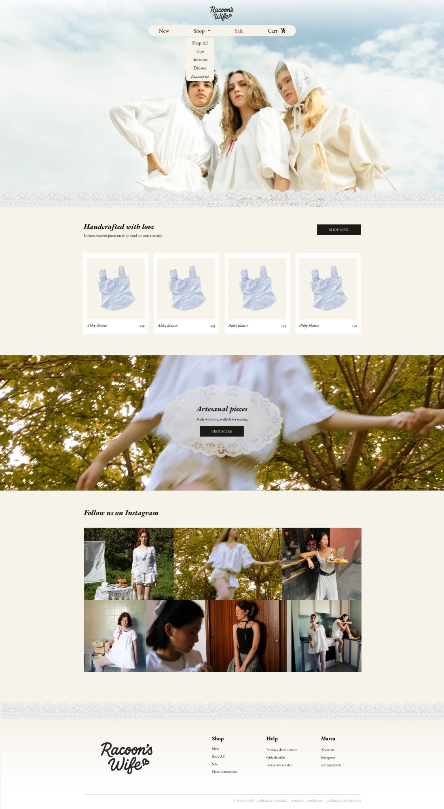
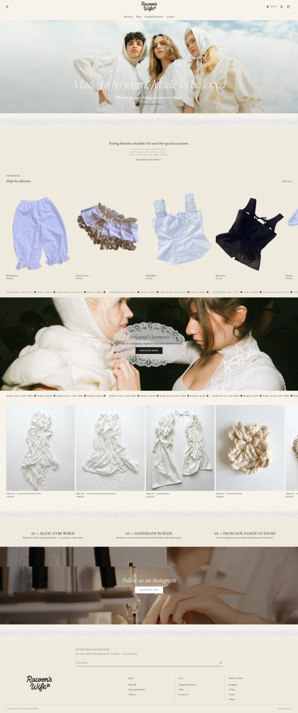

Diseño y construcción de la tienda online de Racoon's Wife, marca de ropa artesanal hecha a mano: desde el brief con la clienta hasta la implementación real en Shopify.
Belén, la persona detrás de Racoon's Wife, hace a mano piezas de ropa con una estética muy propia: blusas y prendas artesanales, tonos crema y blanco roto, encajes y detalles vintage, y algunas piezas únicas de punto que también ofrece en alquiler. Tenía clarísima la identidad de su marca, pero no tenía ningún sitio propio donde vender: dependía de redes sociales y de la venta directa.
Me contrató para diseñar y construir esa tienda en Shopify. No partíamos de cero en cuanto a dirección de marca —eso ya lo tenía ella— pero sí había que traducirlo a una tienda online completa: navegación, catálogo, fichas de producto, checkout y contenido de marca.
Antes de diseñar nada, le pasé a Belén un cuestionario estructurado: qué webs le inspiraban y por qué, qué quería que viera una persona en los primeros segundos, qué incluir en la home, cómo organizar el catálogo, qué páginas necesitaba y qué contenido y fotos tenía ya disponibles.
Ella respondió con un documento muy completo: un moodboard de cuatro tiendas de referencia (Mirror Palais, Damson Madder, Meshki y Doen) con anotaciones muy concretas sobre qué le gustaba de cada una —tipografía, forma de mostrar el producto, sensación de cada paleta de color— y su propio boceto de la estructura de navegación y del contenido de cada página.
2. Diseño en FigmaCon esas referencias diseñé la propuesta de tienda en Figma: tipografía EB Garamond para dar ese aire vintage que pedía Belén, paleta en tonos crema en vez de blanco puro, un grid de producto uniforme, y una sección diferenciada para las piezas artesanales únicas ("Artesanal pieces"), pensada para transmitir que no son prendas de producción en serie.
3. Implementación en ShopifyAquí es donde el proyecto se volvió más interesante: ni Belén ni yo habíamos usado Shopify antes de este proyecto, así que aprendimos la plataforma sobre la marcha. Elegimos un tema base y lo personalizamos tanto como el propio tema permitía, pero no todo lo diseñado en Figma se pudo trasladar tal cual —Shopify da mucha menos libertad de personalización que un diseño libre en Figma— así que varias decisiones se rehicieron ya directamente sobre la plataforma real, a medida que llegaban las fotos y el contenido definitivo de Belén.
Dicho esto, para las partes que sí eran clave para la marca, opté por programar la sección directamente en código en vez de ceder ante las limitaciones del editor visual. El banner de "Artesanal pieces" es el mejor ejemplo: Shopify no permitía superponer una imagen (un png de una pieza de encaje) sobre una foto de fondo, y colocar encima de todo eso un título, un subtítulo y un botón. Escribí esa sección entera a código para poder apilar las tres capas —foto de fondo, png de la pieza y texto con botón— y conseguir el diseño exacto que tenía en Figma.
Partir de un tema de Shopify y personalizarlo, en vez de construir una tienda completamente a medida.
Le permite a Belén gestionar su propio catálogo, precios y contenido sin depender de mí para cada cambio, algo clave para una marca pequeña que sigue creciendo.
Diseñar una tienda 100% a medida: más fiel al Figma original, pero mucho más cara de mantener y con Belén dependiendo de un desarrollador para cualquier cambio futuro.
Usar directamente el moodboard anotado que trajo Belén como punto de partida del diseño, en vez de proponer referencias propias desde cero.
Belén ya tenía un ojo muy entrenado para su propia marca y unas referencias muy concretas; ignorarlas para partir de mi propia investigación habría sido más lento y con más riesgo de no encajar con su visión.
Hacer mi propio moodboard de marcas de referencia antes de mirar el suyo, como haría en un proyecto sin dirección de marca previa.
Rehacer directamente en Shopify varias decisiones de layout y contenido que en Figma se habían diseñado sin las limitaciones reales del tema.
Insistir en replicar el Figma al pixel habría significado pelear contra el tema constantemente, en vez de aprovechar lo que Shopify ya resolvía bien de forma nativa.
Forzar una réplica exacta del diseño en Figma con desarrollo a medida sobre el tema, lo que habría alargado mucho el plazo de un proyecto pensado para durar ~1 mes.
Programar directamente en código la sección del banner de "Artesanal pieces", en vez de usar el editor visual del tema.
El editor nativo no permitía apilar una foto de fondo, un png de una pieza de encaje encima y, encima de todo eso, un título, un subtítulo y un botón. Era la única forma de conseguir el diseño exacto del Figma para una sección tan importante para la marca.
Usar la sección de imagen con texto del propio tema: más rápido, pero habría obligado a aplanar las tres capas en una sola imagen y perder esa composición.
La tienda sigue en construcción activa. Estas dos capturas muestran la evolución desde la primera propuesta en Figma hasta la tienda real.


Clic sobre cualquiera de las dos capturas para verla a tamaño completo.